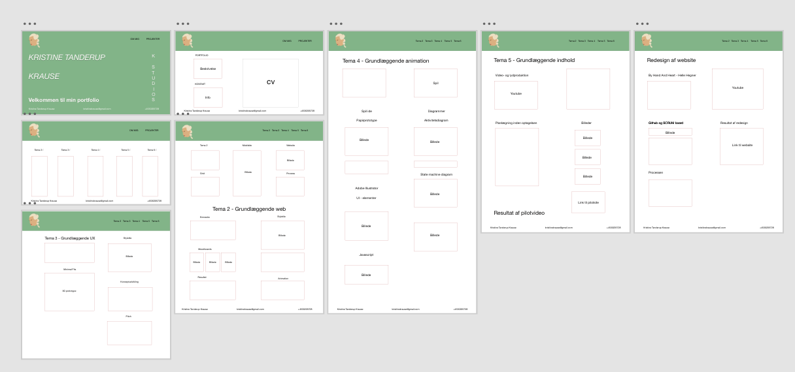
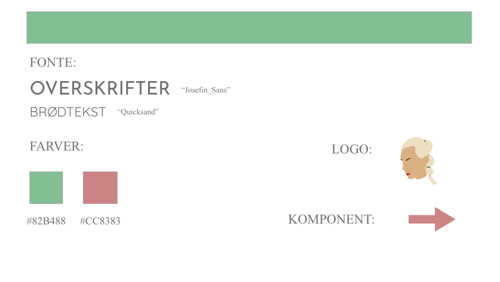

Afslutningen på 1 semester - portfolioeksamen. Processen med at udvikle et portfoliowebsite, starter med nogle vigtige overvejelser. Både designmæssigt, men også layout og indholdsmæssigt. Alt er essentielt, for at skabe et konkret og fuldent website. Moodboards og styletile er gode som start til idefasen. Her overvejes farvevalg og fonte med videre. Der skal dannes et overblik, over de forskellige temaer og projekter der er forekommet igennem semestreret. Tjek om alt linker rigtigt, og kan fungere. Der skal laves en Github, til kodningsprocessen af websitet. Dette gør, at man ikke ender med at miste indhold undervejs i processen. I kodningsprocessen skal der holdes styr og overblik over mange html og css sider. Dette kræver tilmed koncentration og tålmodighed.
Til at starte med, inden kodningen, ville jeg danne mig et overblik over selve navigationen på mit portfoliosite. Derfor startede jeg med, at lave et sitemap i XD.
Dernæst fik jeg lavet wireframes til de første html sider, som jeg ville kode. Dette gav mig en ide til, hvordan mine grids skulle ligge, og hvordan selve placeringen af materialet ville ende ud.
Når vi taler om responsivt webdesign, kommer man ind på Media Queries. Man bruger @media {} til at justere px, efter hvilket device du åbner portfoliowebsitet på. Det er med til, at gøre siden mere brugervenlig, og nemmere at navigere rundt på. Her er et eksempel på, hvordan en ´burgermenu´ vil blive synlig, når @media (max-width: 768px){.
Moodboards blev lavet. Det er en god metode til, at finde ud af design. Hvilke farver og fonte man vil anvende, kan man prøve sig frem med i XD. Det var dette der hjalp mig til, de farver jeg er endt med.
Nu til styletile, hvor man får et samlet overblik over, de elementer man har i brug. Dette vedrører farver, fonte, komponenter mm. Denne er god til, at samle farvekoderne og navne på fontene et sted.
